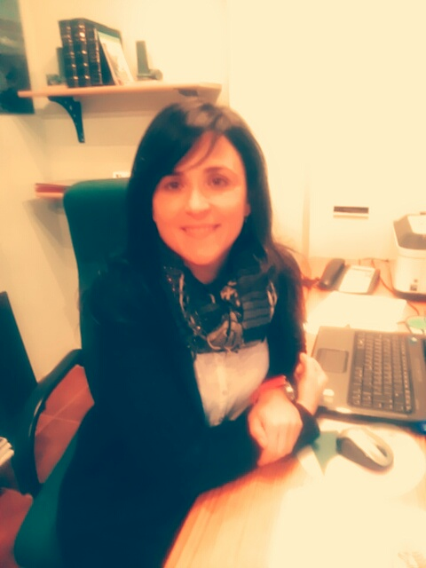

Hola!

Nuestra consulta surge del interés en el ámbito de la salud mental para dar cobertura en Fene y alrededores a la necesidad de la población de una mejora de su calidad de vida y satisfacción.
Tanto en la faceta cognitiva cuando surgen déficits de memoria, aprendizaje o dificultades que impiden realizar con normalidad las actividades de la vida diaria como en el plano emocional cuando aparecen estados ansiosos o depresivos o situaciones estresantes que interfieren en nuestra vida y en el desarrollo de una vida plena
Así pues se establecerán las terapias más idóneas y actuales que puedan mejorar la salud mental y el estado emocional.
Atentamente:
Alejandra Prieto Lago, Psicóloga, colegiada G-5333Portafolio
Os mostramos a continuación algunas de las intervenciones en charlas, artículos y entrevistas

Charla en la Galería Sargadelos sobre el acoso escolar (2016)

Congreso de Psicología Junio de 2016. Santiago.


Otras Charlas en Mugardos, Narón y Ferrol

Artículos en El Boletín desde Narón
Entrevista en TV de Ferrol. El toro por los cuernos
{kind=link}
Entrevista en la Cope Ferrol. Acoso escolar.
{kind=link}
Talleres Ingada
{kind=link}
Presentación do libro Invisibles
{kind=link}
Charla Colegio Culleredo
{kind=link}
Aprendiendo educación sexual con Martina González Veiga
{kind=link}
Jornadas de Mediación
{kind=link}
ADF
{kind=link}
Charla con Susana Ruiz Mostazo
Acerca de
El objetivo de nuestra consulta es conseguir que el paciente se sienta cómodo para establecer una alianza terapéutica que permita enfocar y solucionar su problema desde un enfoque cognitivo-conductual y sistémico.
Desde esta perspectiva, en la consulta de psicología también utilizaremos una combinación de T.C.C. y terapias de tercera generación como el
Mindfulness
en el camino a solventar dificultades que encontramos a lo largo de la vida, como el estrés, ansiedad, miedos o fobias.
Como fin último de nuestra consulta estará proporcionar al paciente las estrategias necesarias que le permitan disfrutar de una mejor calidad de vida.
alextalleresemocionales
{kind=link}
{kind=link}
PERSONALES: Conciencia de uno mismo, autocontrol, autoestima, motivación, flexibilidad
INTERPERSONALES: Empatía, asertividad, influencia, liderazgo, trabajo en equipo
Solicita información
Enlaces de interés
Contacto
Psicoloxía a domicilio
RS: C-15-003484 /// 15.528 Fene. A Coruña (España)
Centro Médico Cedeira
RS: C-15-001290 Avenida Castelao, 27-B. Cedeira. A Coruña (España)
Policlínica Carmen Carballo
RS: C-15-003484 Rúa Tras do Cádavo, 11. 15.500 Fene.
Teléfono cita previa: 630 523 226
Correo electrónico:aplpsico@gmail.com